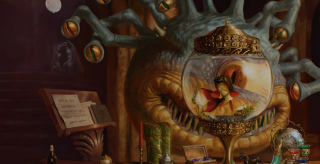

Sourcebooks
Player’s Handbook
The Player’s Handbook is an essential tool for both old and new players. This book includes the core rules, races, classes, and much more.
Order NowDungeon Master’s Guide
The Dungeon Master’s Guide is a great handbook for those interested in tools for creating thier own world for thier players to experience.
Order Now

Xanathar’s Guide to Everything
In this first expansion for fifth edition, discover new rules, spells, feats, and over twenty five new subclasses to play.
Order Now
Tasha's Cauldron of Everything
This expansion includes more sublcasses, new feats and rules, and spell’s like Tasha’s Hideous Laughter and more.
Order NowVolo's Guide to Monsters
This sourcebook focuses on in-depth lore on the monsters of the Forgotten Realm. It also includes new playable races and more.
Order Now